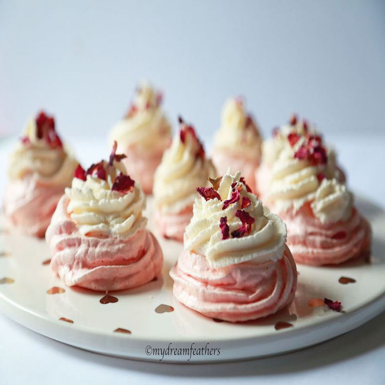

Rose pavlova cake

Description
Try out these rose-flavored pavlova mini cakes for any celebration or holiday. You can store them in an airtight container for several days (without whipping cream) and decorate them whenever you want.
Prep Time: 25 mins
Cook Time: 1 hrs 15 mins
Additional Time: 50 mins
Total Time: 2 hrs 30 mins
Servings: 18
Ingredients
- 3 egg whites, at room temperature
- 1 teaspoon dried rose petal powder (Optional)
- ½ cup white sugar, or more to taste
- 1 teaspoon vanilla extract, or to taste
- ½ teaspoon rose extract, or to taste
- 1 teaspoon cornstarch
- 1 ½ tablespoons cream cheese
- 1 cup heavy whipping cream
- 2 tablespoons white sugar
- 1 tablespoon dried rose petals (Optional)
Steps
- Preheat the oven to 225 degrees F (110 degrees C). Line a baking sheet with parchment paper.
- Combine egg whites and rose petal powder in the bowl of a stand mixer; beat until soft peaks form. Start beating in 1/2 cup sugar gradually. Increase speed to high and beat until stiff and glossy peaks form. Mix in vanilla extract and rose extract. Fold cornstarch very gently into the meringue using a spatula.
- Spoon meringue into a piping bag fitted with a fine round tip. Pipe into 18 individual rounds.
- Bake in the preheated oven until edges appear dry, 1 hour 15 minutes. Turn off oven and leave pavlovas inside the oven for another 20 to 25 minutes. Remove from oven and let cool completely, about 30 minutes.
- Beat cream cheese in a bowl for 30 seconds. Add heavy cream and 2 tablespoons sugar; beat until fluffy. Spoon whipped cream into another piping bag.
- Pipe whipped cream over cooled pavlovas. Decorate with dried rose petals.